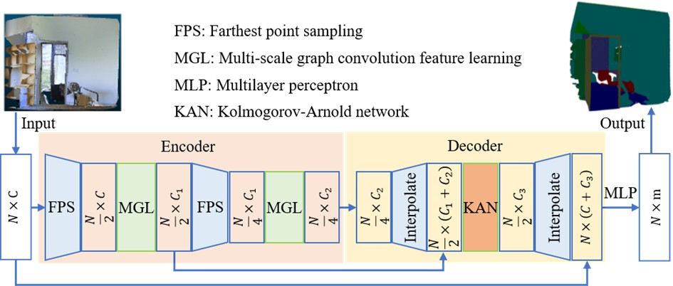
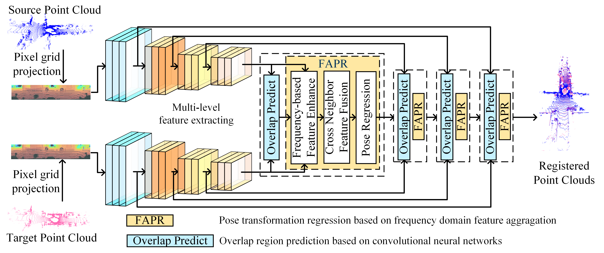

Journal Article · 2025
Multi-scale local geometry feature and global context learning with Kolmogorov-Arnold representation for 3D semantic segmentation
Signal, Image and Video Processing
View paper01
I am currently a Ph.D. student at Huazhong University of Science and Technology in Wuhan, China. My research is dedicated to deep learning and pattern recognition, with core areas encompassing point cloud processing and time-series modeling.
02

Journal Article · 2025
Signal, Image and Video Processing
View paper
Journal Article · 2025
Expert Systems with Applications
View paper03

Manuscript · Under Review
IEEE Transactions on Pattern Analysis and Machine Intelligence

Manuscript · Under Review
Engineering Applications of Artificial Intelligence
04
More work is on the way
This section is reserved for future project demos, technical notes, and open-source contributions.